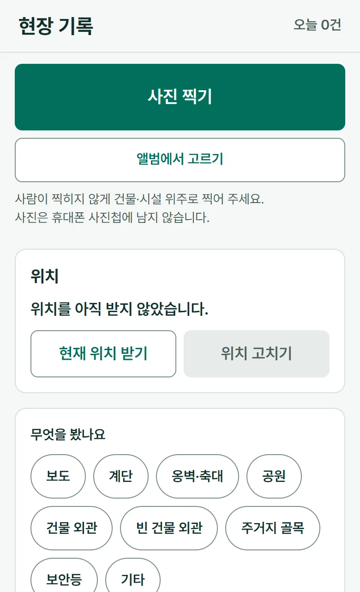

이 동네,
공모에 낼 수 있을까요?
동 이름을 넣으면 도시재생·노후주거지정비 요건을 공식 통계로 계산합니다.
숫자마다 출처와 기준일이 붙은 한글(HWPX)·워드·엑셀 근거 문서를 바로 받습니다.
현장 기록 1쪽예시
부산 해운대구 반여1동
- 준공 20년 이상 건축물
- 83.0%
- 출처 쇠퇴진단지표 · 2025-12-31
- 30년 최대 대비 인구 감소
- 35%
- 출처 쇠퇴진단지표 · 2025-12-31
- 노후·불량 연한
- 제3조②
- 출처 부산 도시정비 조례 원문
누가 씁니까
용역사 실무자
구역 경계를 바꿀 때마다 건물을 다시 세던 일을 버튼 한 번으로 끝냅니다.
구청 정비·재생 담당
"그 숫자 어디서 나왔어요?"라는 질문에 출처와 조문을 바로 보여 줍니다.
도시재생지원센터
해마다 같은 동네를 다시 재고, 작년과 달라진 숫자를 남깁니다.
현장에서 결재까지 세 걸음
현장 사진과 공식 통계를 한 장에 묶습니다.
같은 자료로 다시 만들면 언제나 같은 문서가 나옵니다.
찍기
사진을 찍으면 위치와 오차 범위(±m)가 함께 기록됩니다.
얼굴과 번호판은 자동으로 가려집니다.잇기
사진을 찍은 자리의 행정동과 필지를 찾아 공식 통계와 조례 조문을 잇습니다.
받기
결재에 올릴 한글 1쪽과 PDF, 근거 표를 내려받습니다.
지금 바로 써 볼 수 있습니다

현장 기록 1쪽
사진 한 장이 결재 문서가 됩니다.
써 보기
같은 기록으로 사진대지도 함께 만듭니다.신청요건 확인
지번 목록이나 GIS 파일을 넣으면 노후주거지정비·재개발 요건을 조문과 함께 계산합니다.
써 보기
부산 254개 법정동, 규칙 승인 전 참고용입니다.동네 근거 페이지
전국 3,559개 행정동의 쇠퇴 지표와 동네 점수·순위를 출처와 함께 봅니다.
써 보기
참고 도구3D·4D 비교(PC) · 동네 점수·순위 · 사업성 간이 계산 · 집계구(통계청 최소 통계 구역)로 다시 보기 · 오래된 창고·공장 · 음식점 상권 변화
숫자를 어떻게 다룹니까
숫자에는 출처를
모든 숫자에 출처·기준일·계산식을 붙입니다.
따라가서 확인할 수 있어야 근거입니다.
같은 자료로 다시 만들면 같은 문서가 나옵니다.
모르면 모른다고
자료로 정할 수 없는 건물은 '현장 확인'으로 남깁니다.
빈칸을 추정으로 채우지 않습니다.
확인하지 못한 것은 범위와 이유로 보여 드립니다.
판단은 사람이
점수·순위·사업성은 계산식과 함께 공개합니다.
점수는 공개한 지표를 같은 무게로 더한 값입니다.
최종 결정은 담당자와 주민이 내립니다.
동네 점수·순위 · 사업성 간이 계산
사람을 먼저
현장 사진과 위치는 내 기기 밖으로 나가지 않습니다.
얼굴, 번호판, 건물 이름 속 개인 이름을 가립니다.
필요한 정보만 다룹니다.
하지 않는 일
- 감정평가·투자 권유
- 매물 중개
- 성범죄자 공개정보 활용(법으로 금지)
근거를 만드는 쪽이 거래로 돈을 벌지 않아야 그 근거를 믿을 수 있습니다.
지금 있는 자료
3,559
전국 행정동 근거 페이지(2025 경계, 통합 전 옛 동 51곳은 따로)
년26년
2000~2025년 쇠퇴 지표를 해마다 기록
개10개
원문과 대조해 공개한 기준 판본
모든 숫자의 원천은 '데이터 출처' 페이지에서 확인할 수 있습니다.